Here is the sample pharmaceutical SDF that we are going to utilize, and the Colab notebook you'll use to follow along:
#) such as # STEP 1, and the next slides take you through them one by one.Before we start pulling text from scanned PDFs, we need to make sure we have the right tools. Since these PDFs contain images of text (not actual text), we'll use OCR for text recognition and bounding boxes for visualization. We'll be using the following libraries:
You already know PyMuPDF, Pillow (PIL) and NumPy from Project 3.
If you're using Google Colab, you must install Tesseract OCR manually because it's not included by default.
Now, let's install everything and get started! Press Run on the first cell, the one that starts with # STEP 1:
# ============================================
# STEP 1: Install Dependencies
# ============================================
#
# WHAT WE'RE DOING:
# Installing the tools we need to read text from scanned PDFs.
#
# WHY THIS MATTERS:
# Scanned PDFs are just images - we need special software (OCR) to "read" them.
# Tesseract is like teaching a computer to read photos of text!
#
# WHAT YOU'LL SEE:
# Installation messages showing packages being downloaded and set up.
# ============================================
!apt install -y tesseract-ocr
!pip install pymupdf pytesseract opencv-python pillow numpy
# TIP: If you see "already installed" messages, that's fine - it just means
# the packages were already on your system!What this code does:
! at the start of a line tells Colab to run it as a command, not as Python.apt install installs Tesseract, the OCR program itself. pip install installs the Python libraries, including pytesseract, which lets Python send a picture to Tesseract and get its text back.What you'll see in Colab:
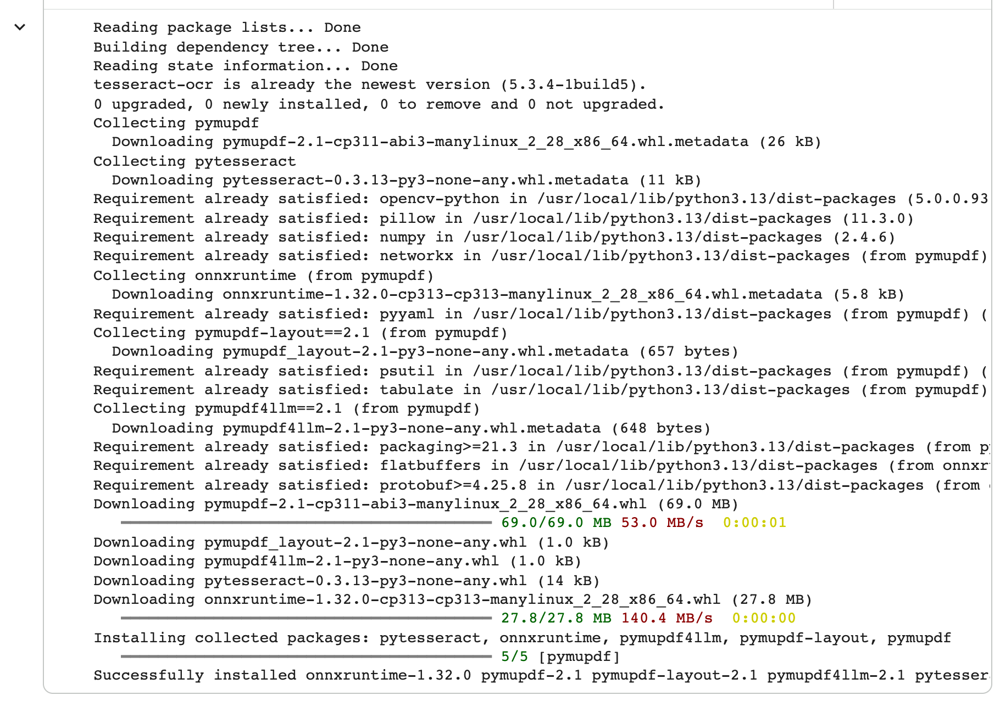
(opens the picture full size in a new tab)Click the picture to open it full size.
Colab cuts off the long lines at the right edge of the cell. The last line, in full, reads:
Successfully installed onnxruntime-1.32.0 pymupdf-2.1 pymupdf-layout-2.1 pymupdf4llm-2.1 pytesseract-0.3.13If you see that line, you're ready.
Now that we have everything installed, let's import the libraries.
Press Run on the cell that starts with # STEP 2:
# ============================================
# STEP 2: Import Libraries
# ============================================
#
# WHAT WE'RE DOING:
# Loading the tools we just installed so we can use them.
#
# WHY THIS MATTERS:
# Each library has a specific job:
# - pymupdf (PyMuPDF): Opens PDF files
# - pytesseract: The OCR engine that reads text from images
# - cv2 (OpenCV): Helps us process and draw on images
# - PIL (Pillow): Displays images in our notebook
# - numpy: Handles the math behind image processing
#
# WHAT YOU'LL SEE:
# Nothing visible - but if there are no errors, we're good to go!
# ============================================
import pymupdf # PyMuPDF - for opening PDFs
import cv2 # OpenCV - for image processing
import pytesseract # Tesseract OCR - for reading text
import numpy as np # NumPy - for working with image data
from PIL import Image # Pillow - for displaying images
print("All libraries loaded successfully!")What this code does:
import line loads one library, so the cells below can use it. as np lets the code call NumPy np for short.What you'll see in Colab:
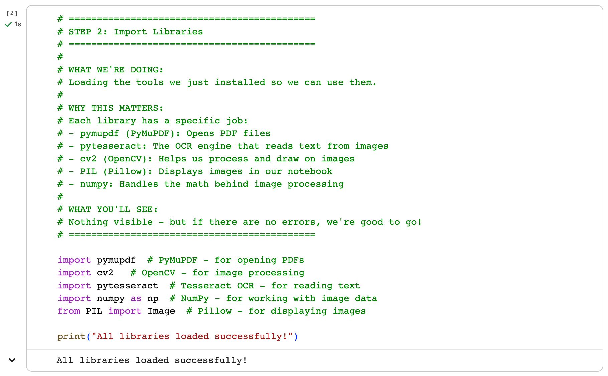
(opens the picture full size in a new tab)Click the picture to open it full size.
Everything is set up! It's time to move forward to the next step.
At this stage, we want to open a scanned PDF, check if we can pull text from it, and convert it into an image for OCR.
Press Run on the cell that starts with # STEP 3:
# ============================================
# STEP 3: Upload Your Pharmaceutical SDF
# ============================================
#
# WHAT WE'RE DOING:
# Uploading a scanned PDF file from your computer to Google Colab.
#
# WHY THIS MATTERS:
# We need an actual document to practice on! You'll upload a
# Certificate of Processing or similar pharmaceutical document.
#
# WHAT YOU'LL SEE:
# A "Choose Files" button will appear. Click it and select your PDF.
# ============================================
from google.colab import files
print("Click the button below to upload your pharmaceutical SDF (PDF file):")
uploaded = files.upload()
# Get the filename of the uploaded file
pdf_path = list(uploaded.keys())[0]
print(f"\nUploaded: {pdf_path}")
# Open the PDF document
doc = pymupdf.open(pdf_path)
print(f"Document has {len(doc)} page(s)")
# TIP: If you see a FileNotFoundError, make sure you clicked "Choose Files"
# and selected a valid PDF file!A Choose Files button appears under the cell. Click it and pick pharmaceutical-sdf-page4-certificate-processing.pdf, the Page 4 file you downloaded.
What this code does:
files.upload() copies the file you pick into your notebook. list(uploaded.keys())[0] takes its name and keeps it as pdf_path.pymupdf.open(pdf_path) opens it with PyMuPDF, as in Project 3, and len(doc) counts its pages.What you'll see in Colab:
Click the button below to upload your pharmaceutical SDF (PDF file):
pharmaceutical-sdf-page4-certificate-processing.pdf(application/pdf) - 617955 bytes, last modified: 11/19/2026 - 100% done
Saving pharmaceutical-sdf-page4-certificate-processing.pdf to pharmaceutical-sdf-page4-certificate-processing.pdf
Uploaded: pharmaceutical-sdf-page4-certificate-processing.pdf
Document has 1 page(s)Colab cuts long lines off at the right edge of the cell. This is the full text it prints.
If the last line says Document has 1 page(s), Page 4 is open.
doc now holds: Page 4, open in PyMuPDF. The next steps read it from here.
Let's start by testing if we can extract text without OCR. If the PDF contains searchable text, we should get readable content. But if the PDF is just an image (like a scanned document), this method will likely fail, showing us why we need OCR.
What do you think will happen if we load our sample pharmaceutical SDF and inspect it? Let's find out.
Press Run on the cell that starts with # STEP 4:
# ============================================
# STEP 4: Try Direct Text Extraction (This Will Fail!)
# ============================================
#
# WHAT WE'RE DOING:
# Attempting to extract text the "easy" way - without OCR.
#
# WHY THIS MATTERS:
# This demonstrates WHY we need OCR! Scanned PDFs are just pictures,
# so normal text extraction returns nothing or gibberish.
#
# WHAT YOU'LL SEE:
# Probably empty output or random characters - that's expected!
# ============================================
# Get the first page of our PDF
page = doc[0]
# Try to extract text the normal way
text = page.get_text("text")
print("Attempting direct text extraction (without OCR):")
print("-" * 50)
if text.strip():
print(text[:500]) # Show first 500 characters
else:
print("[EMPTY] - No text found! This PDF is a scanned image.")
print("This is why we need OCR - to 'read' the picture of text!")
# TIP: If you DO see text here, your PDF might be text-based, not scanned.
# For this exercise, we'll still use OCR to demonstrate the technique.What this code does:
doc[0] is the first page, and page.get_text("text") asks PyMuPDF for its text, as in Project 3.text.strip() removes spaces and line breaks, so if nothing else is left, the cell prints [EMPTY].What you'll see in Colab:
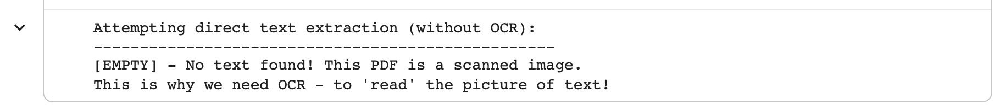
(opens the picture full size in a new tab)Click the picture to open it full size.
What Should Happen?
Take a moment to pause here: complete the steps above, and then come back when you're ready to continue.
Since the text extraction failed, we now need to convert the PDF page into an image before we can use OCR. Here, we are converting the first page of the PDF.
Press Run on the cell that starts with # STEP 5:
# ============================================
# STEP 5: Convert PDF Page to an Image
# ============================================
#
# WHAT WE'RE DOING:
# Converting the PDF page into a picture that OCR can read.
#
# WHY THIS MATTERS:
# OCR tools work on images, not PDFs. Think of it like taking a
# screenshot of the document so the computer can "look" at it.
#
# WHAT YOU'LL SEE:
# Your pharmaceutical document displayed as an image!
# ============================================
# Convert the page to pixels (an image)
pix = page.get_pixmap(dpi=300)
# Convert to a format we can work with
img = np.array(Image.frombytes("RGB", [pix.width, pix.height], pix.samples))
# Display the original image
print("Here's your pharmaceutical document as an image:")
display(Image.fromarray(img))
# TIP: If the image looks rotated or upside down, we'll fix that later!What this code does:
page.get_pixmap(dpi=300) turns the page into a picture with 300 pixels for each inch of the page (dpi means dots per inch). That makes Page 4 2550 x 3300 pixels.display() shows it under the cell.What you'll see in Colab:
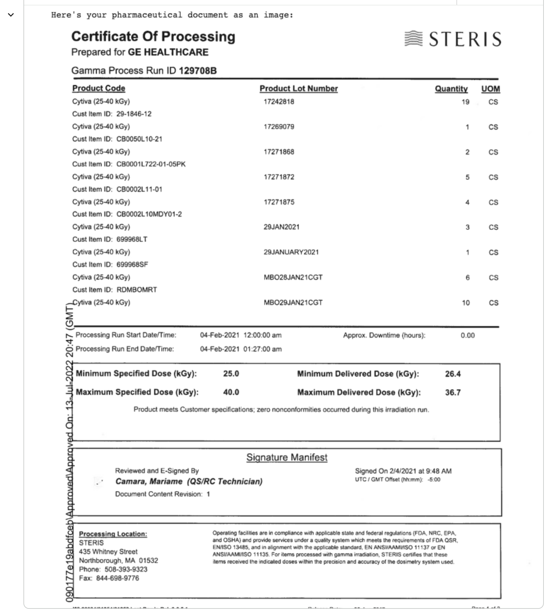
(opens the picture full size in a new tab)Click the picture to open it full size.
Why Convert to an Image? OCR (Optical Character Recognition) can't work on PDFs directly. It needs an image of the text.
Now that we have the image, let's clean it up to improve OCR accuracy!
img now holds: the picture of Page 4. STEP 6 starts from it.
Now come the 4 cleaning steps from the Learn cards, grayscale, contrast, noise and resize, in one cell each. Let's tackle them one by one.
Convert the Image to Grayscale: Grayscale conversion simplifies OCR processing, making text easier to detect. First, we remove color information since OCR only needs black and white text.
Press Run on the cell that starts with # STEP 6:
# ============================================
# STEP 6: Preprocess - Convert to Grayscale
# ============================================
#
# WHAT WE'RE DOING:
# Removing color from the image - making it black and white.
#
# WHY THIS MATTERS:
# OCR works better on grayscale images because:
# - It's simpler (just light and dark, no colors to confuse it)
# - Text stands out more against the background
# - Processing is faster
#
# WHAT YOU'LL SEE:
# Your document in shades of gray (no color).
# ============================================
# Convert to grayscale (remove color)
gray = cv2.cvtColor(img, cv2.COLOR_RGB2GRAY)
print("Grayscale version (color removed):")
display(Image.fromarray(gray))
# TIP: Notice how the text still looks clear even without color!What this code does:
cv2.cvtColor(img, cv2.COLOR_RGB2GRAY) turns the color picture into shades of gray, with one number for each pixel instead of three.What you'll see in Colab:
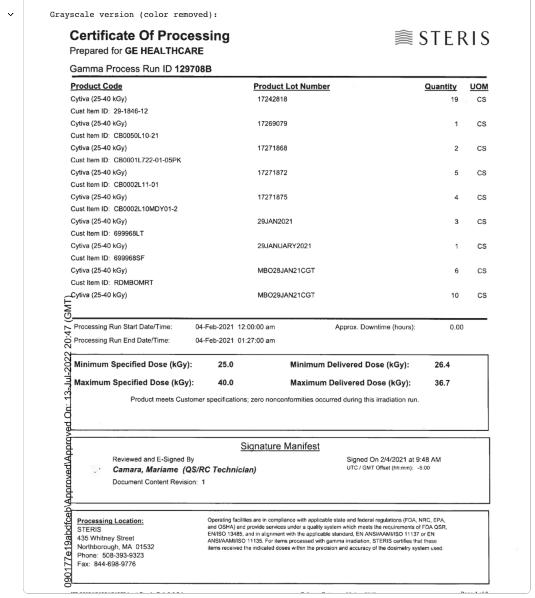
(opens the picture full size in a new tab)Click the picture to open it full size.
Why Grayscale?
gray now holds: the gray picture. STEP 7, STEP 8 and STEP 9 each change it and save the result under the same name, gray.
Enhance Contrast with Adaptive Thresholding
Some scanned documents have uneven lighting or faded text. This step boosts text visibility. To make the text stand out, we apply adaptive thresholding.
Press Run on the cell that starts with # STEP 7:
# ============================================
# STEP 7: Preprocess - Enhance Contrast (Thresholding)
# ============================================
#
# WHAT WE'RE DOING:
# Making the text MUCH darker and the background MUCH lighter.
#
# WHY THIS MATTERS:
# Scanned documents often have uneven lighting or faded text.
# Thresholding makes everything either pure black or pure white,
# which helps OCR see the text clearly.
#
# WHAT YOU'LL SEE:
# A high-contrast version where text is very dark on white background.
# ============================================
# Apply adaptive thresholding
# This automatically adjusts for different lighting in different areas
gray = cv2.adaptiveThreshold(
gray, # Input image
255, # Maximum value (white)
cv2.ADAPTIVE_THRESH_MEAN_C, # Method: use local mean
cv2.THRESH_BINARY, # Output: black or white only
11, # Block size (area to analyze)
2 # Constant to subtract
)
print("After thresholding (high contrast):")
display(Image.fromarray(gray))
# TIP: If the text looks broken or spotty, try adjusting the block size (11)
# or the constant (2). Larger values = less sensitive to local variations.What this code does:
cv2.adaptiveThreshold(...) takes gray and gives back a picture where every pixel is pure black or pure white. The comment next to each value says what it does.What you'll see in Colab:
Click the picture to open it full size.
Why Contrast Enhancement?
Reduce Noise with Bilateral Filtering
OCR can mistake noise for text, causing errors. Bilateral filtering smooths the background while keeping text sharp.
Press Run on the cell that starts with # STEP 8:
# ============================================
# STEP 8: Preprocess - Reduce Noise (Filtering)
# ============================================
#
# WHAT WE'RE DOING:
# Smoothing out tiny specks and dots that aren't part of the text.
#
# WHY THIS MATTERS:
# Scanned documents often have dust, scratches, or scanner artifacts.
# OCR might mistake these for letters! Filtering cleans them up
# while keeping the real text sharp.
#
# WHAT YOU'LL SEE:
# A cleaner image with less "noise" (random dots).
# ============================================
# Apply bilateral filtering
# This smooths the image while keeping edges (text) sharp
gray = cv2.bilateralFilter(
gray, # Input image
9, # Diameter of pixel neighborhood
75, # Filter sigma in the color space
75 # Filter sigma in the coordinate space
)
print("After noise reduction (cleaner):")
display(Image.fromarray(gray))
# TIP: If you see the text getting blurry, reduce the filter values.
# If you still see lots of specks, increase them.What this code does:
cv2.bilateralFilter(...) smooths each pixel with the pixels around it, but not across the sharp edges of the letters.What you'll see in Colab:
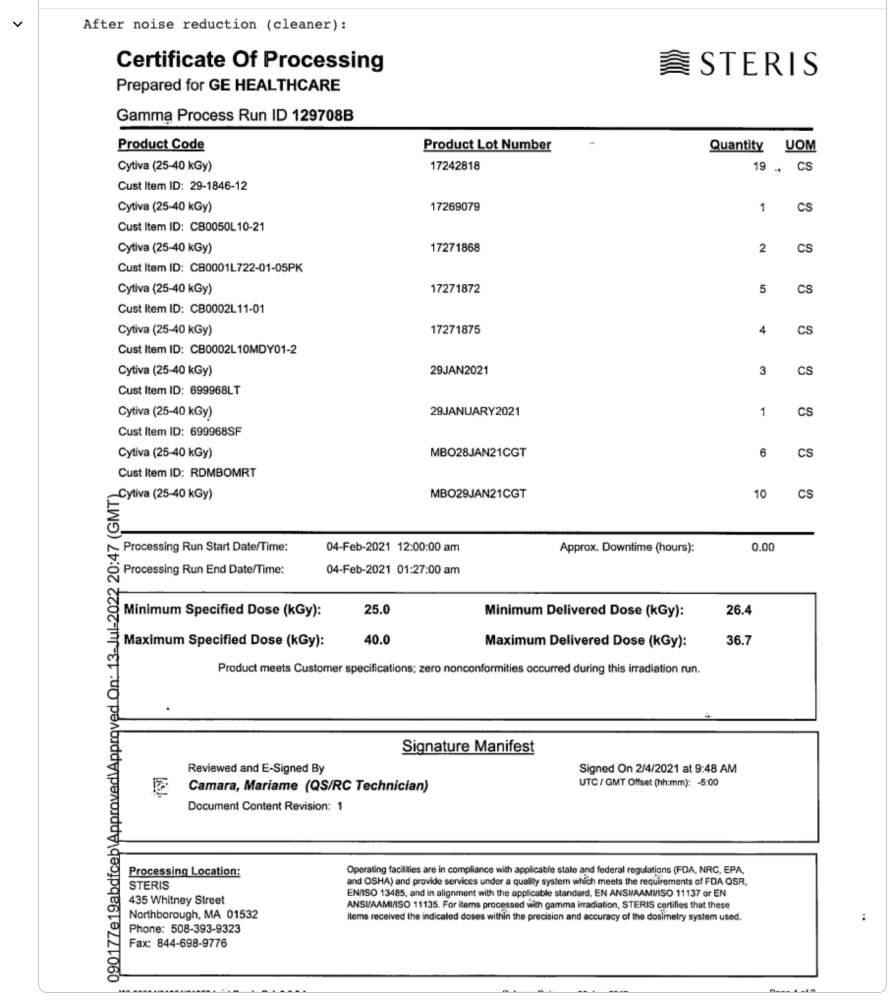
(opens the picture full size in a new tab)Click the picture to open it full size.
Why Noise Reduction?
Resize the Image for Better OCR Accuracy
If the scanned text is too small, OCR might miss details. We scale up the image to improve detection.
Press Run on the cell that starts with # STEP 9:
# ============================================
# STEP 9: Preprocess - Resize for Better OCR
# ============================================
#
# WHAT WE'RE DOING:
# Making the image bigger so small text becomes easier to read.
#
# WHY THIS MATTERS:
# Tesseract OCR works best when text is at least 12 pixels tall.
# Scanned documents often have tiny text that's hard to recognize.
# Scaling up by 200% (double size) helps OCR catch more details.
#
# WHAT YOU'LL SEE:
# A larger version of your document (you might need to scroll).
# ============================================
# Scale up the image by 200% (double the size)
scale_percent = 200
width = int(gray.shape[1] * scale_percent / 100)
height = int(gray.shape[0] * scale_percent / 100)
# Resize using high-quality interpolation
gray = cv2.resize(gray, (width, height), interpolation=cv2.INTER_CUBIC)
print(f"Resized to {width}x{height} pixels (200% of original):")
display(Image.fromarray(gray))
# TIP: If OCR is still missing small text, try scale_percent = 300!What this code does:
gray.shape[1] is the picture's width in pixels and gray.shape[0] its height. Times 200, divided by 100, each one doubles.What you'll see in Colab:
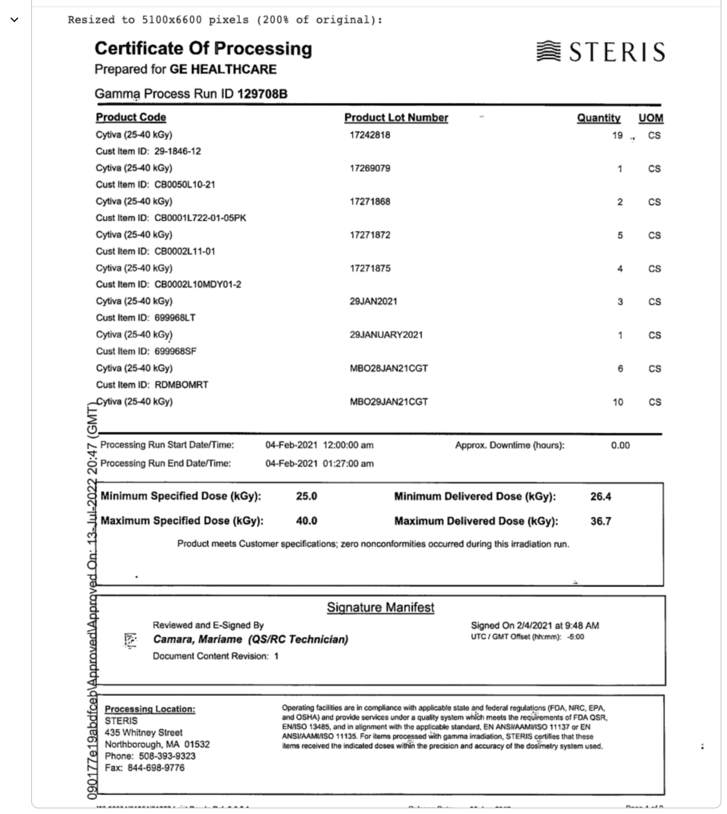
(opens the picture full size in a new tab)Click the picture to open it full size.
Why Resize?
Now that our image is clean and optimized, it's ready for OCR processing using Tesseract.
Now that we've learned how to preprocess the PDF image for better clarity, it's time to extract text using Tesseract OCR. OCR will scan the image and convert the detected characters into editable text. Let's see how well it performs on our processed document.
Now let's feed our cleaned-up image into Tesseract and see what it can recognize.
Press Run on the cell that starts with # STEP 10:
# ============================================
# STEP 10: Run Tesseract OCR - Extract Text!
# ============================================
#
# WHAT WE'RE DOING:
# Finally! Using Tesseract to read the text from our preprocessed image.
#
# WHY THIS MATTERS:
# This is the moment where our computer "reads" the document!
# All our preprocessing work was to make this step more accurate.
#
# WHAT YOU'LL SEE:
# The text that Tesseract extracted from your pharmaceutical document.
# ============================================
# Configure Tesseract for best results
# --oem 3: Use the neural network engine (most accurate)
# -l eng: Language is English
custom_config = r'--oem 3 -l eng'
# Run OCR!
ocr_text = pytesseract.image_to_string(gray, config=custom_config)
print("=" * 50)
print("OCR EXTRACTED TEXT")
print("=" * 50)
print(ocr_text)
# TIP: Don't worry if some words look wrong - we'll clean them up next!Tesseract provides multiple text extraction options, but the best approach for scanned documents is to use optimized configurations.
The custom_config options tell Tesseract how to process the image:
--oem 3: Uses the best OCR engine, which is based on AI (LSTM-based model). An LSTM is a kind of AI model that reads a line of text in order, so each letter helps it guess the next.-l eng: Specifies that the text is in English.Expected Output: If everything works correctly, we should see text extracted from the scanned document printed under the cell. Here is the top of it:
What you'll see in Colab:
==================================================
OCR EXTRACTED TEXT
==================================================
Certificate Of Processing Z= STERIS
Prepared for GE HEALTHCARE
Gamma Process Run ID 129708B
Product Code Product Lot Number “ Quantity UOM
Cytiva (25-40 kGy) 17242818 19 .. CS
Cust Item ID: 29-1846-12
Cytiva (25-40 kGy) 17269079 1 cs
Cust Item ID: CBOQ050L10-21
Cytiva (25-40 kGy) 17271868 2 CS
Cust Item ID: CB0001L722-01-05PK
Cytiva (25-40 kGy) 17271872 5 Cs
Cust Item ID: CB0002L11-01
Cytiva (25-40 kGy) 17271875 4 CS
Cust Item ID: CB0002L10MDY01-2
Cytiva (25-40 kGy) 29JAN2021 3 cs
Cust Item ID: 699968LT
Cytiva (25-40 kGy) 29JANUARY2021 1 CS
Cust Item ID: 699968SF
Cytiva (25-40 kGy) MBO28JAN21CGT 6 CS
Cust Item ID: RODMBOMRTAnd here is the rest:
—Cyiiva (25-40 kGy) MBO29JAN21CGT 10 CS
=
©,
N. Processing Run Start Date/Time: 04-Feb-2021 12:00:00 am Approx. Downtime (hours): 0.00
S Processing Run End Date/Time: 04-Feb-2021 01:27:00 am
C} Minimum Specified Dose (kGy): 25.0 Minimum Delivered Dose (kGy): 26.4
Maximum Specified Dose (kGy): 40.0 Maximum Delivered Dose (kGy): 36.7
Product meets Customer specifications; zero nonconformities occurred during this irradiation run.
signature Manifest
Reviewed and E-Signed By Signed On 2/4/2021 at 9:48 AM
Camara, Mariame (QS/RC Technician) UTC / GMT Offset (hh:mm): -5:00
Document Content Revision: 1
Processing Location: Operating facilities are in compliance with applicable state and federal regulations (FDA, NRC, EPA,
| STERIS and OSHA) and provide services under a quality system which meets the requirements of FDA QSR,
. EN/ISO 13485, and in alignment with the applicable standard, EN ANSIVAAMIASO 11137 or EN
j 435 Whitney Street ANSVVAAMI/ISO 11135. For items processed with gamma irradiation, STERIS certifies that these
Northborough, MA 01532 items received the indicated doses within the precision and accuracy of the dosimetry system used.
Phone: 508-393-9323
Fax: 844-698-9776
W1-00034/01354/01369 Last Rev In Rel. 3.6.5.1 * Release Date: 05-Jun-2017 Page 1 of 2Colab cuts long lines off at the right edge of the cell. This is the full text it prints.
However, OCR isn't perfect. Sometimes it misreads characters, adds extra spaces, or misses words. That's why we need STEP 11: Clean Up OCR Errors.
ocr_text now holds: all the text Tesseract read on Page 4.
OCR text often contains errors, unnecessary spaces, or weird formatting. We need to clean it up to make it more readable and structured.
Press Run on the cell that starts with # STEP 11:
# ============================================
# STEP 11: Clean Up OCR Errors
# ============================================
#
# WHAT WE'RE DOING:
# Fixing common mistakes that OCR makes on pharmaceutical documents.
#
# WHY THIS MATTERS:
# OCR often confuses similar-looking characters:
# - "0" (zero) vs "O" (letter O)
# - "1" (one) vs "I" (letter I) vs "l" (lowercase L)
# In pharmaceutical docs, this can turn "LOT" into "L0T"!
#
# WHAT YOU'LL SEE:
# Cleaner text with common pharmaceutical terms fixed.
# ============================================
import re
# Step 11.1: Remove extra spaces and line breaks
ocr_text_clean = " ".join(ocr_text.split())Here's the rest of the same cell:
# Step 11.2: Fix common OCR errors in pharmaceutical documents
# These are words where OCR often mistakes numbers for letters
ocr_text_clean = re.sub(r'\bL0T\b', 'LOT', ocr_text_clean, flags=re.IGNORECASE)
ocr_text_clean = re.sub(r'\bC0A\b', 'COA', ocr_text_clean, flags=re.IGNORECASE)
ocr_text_clean = re.sub(r'\bCERT1FICATE\b', 'CERTIFICATE', ocr_text_clean, flags=re.IGNORECASE)
ocr_text_clean = re.sub(r'\bEXP1RATION\b', 'EXPIRATION', ocr_text_clean, flags=re.IGNORECASE)
ocr_text_clean = re.sub(r'\bPR0CESSING\b', 'PROCESSING', ocr_text_clean, flags=re.IGNORECASE)
ocr_text_clean = re.sub(r'\bMANUFACTUR1NG\b', 'MANUFACTURING', ocr_text_clean, flags=re.IGNORECASE)
# Step 11.3: Remove any weird symbols that aren't useful
ocr_text_clean = re.sub(r'[^a-zA-Z0-9\s,.%-/:]', '', ocr_text_clean)
print("=" * 50)
print("CLEANED OCR TEXT")
print("=" * 50)
print(ocr_text_clean)
# TIP: Add more re.sub() lines if you notice other common mistakes!What this code does:
re.sub(pattern, new, ocr_text_clean) finds every match of the pattern and swaps it for the new word. \b marks the edge of a word, as in Project 3.flags=re.IGNORECASE matches capital and small letters alike, so l0t is fixed too.re.sub deletes symbols that aren't letters, numbers or common punctuation.What you'll see in Colab:
==================================================
CLEANED OCR TEXT
==================================================
Certificate Of Processing Z STERIS Prepared for GE HEALTHCARE Gamma Process Run ID 129708B Product Code Product Lot Number Quantity UOM Cytiva (25-40 kGy) 17242818 19 .. CS Cust Item ID: 29-1846-12 Cytiva (25-40 kGy) 17269079 1 cs Cust Item ID: CBOQ050L10-21 Cytiva (25-40 kGy) 17271868 2 CS Cust Item ID: CB0001L722-01-05PK Cytiva (25-40 kGy) 17271872 5 Cs Cust Item ID: CB0002L11-01 Cytiva (25-40 kGy) 17271875 4 CS Cust Item ID: CB0002L10MDY01-2 Cytiva (25-40 kGy) 29JAN2021 3 cs Cust Item ID: 699968LT Cytiva (25-40 kGy) 29JANUARY2021 1 CS Cust Item ID: 699968SF Cytiva (25-40 kGy) MBO28JAN21CGT 6 CS Cust Item ID: RODMBOMRT Cyiiva (25-40 kGy) MBO29JAN21CGT 10 CS , N. Processing Run Start Date/Time: 04-Feb-2021 12:00:00 am Approx. Downtime (hours): 0.00 S Processing Run End Date/Time: 04-Feb-2021 01:27:00 am C Minimum Specified Dose (kGy): 25.0 Minimum Delivered Dose (kGy): 26.4 Maximum Specified Dose (kGy): 40.0 Maximum Delivered Dose (kGy): 36.7 Product meets Customer specifications zero nonconformities occurred during this irradiation run. signature Manifest Reviewed and E-Signed By Signed On 2/4/2021 at 9:48 AM Camara, Mariame (QS/RC Technician) UTC / GMT Offset (hh:mm): -5:00 Document Content Revision: 1 Processing Location: Operating facilities are in compliance with applicable state and federal regulations (FDA, NRC, EPA, STERIS and OSHA) and provide services under a quality system which meets the requirements of FDA QSR, . EN/ISO 13485, and in alignment with the applicable standard, EN ANSIVAAMIASO 11137 or EN j 435 Whitney Street ANSVVAAMI/ISO 11135. For items processed with gamma irradiation, STERIS certifies that these Northborough, MA 01532 items received the indicated doses within the precision and accuracy of the dosimetry system used. Phone: 508-393-9323 Fax: 844-698-9776 W1-00034/01354/01369 Last Rev In Rel. 3.6.5.1 * Release Date: 05-Jun-2017 Page 1 of 2Colab cuts long lines off at the right edge of the cell. This is the full text it prints.
The text is now one long line. The last re.sub removed the = after Z and the “ after Lot Number.
ocr_text_clean now holds: the cleaned text. ocr_text still holds the text as Tesseract read it.
The reading also does this cleaning in two smaller cells, one change at a time, so you can see each one.
Tesseract sometimes breaks text into multiple lines when it shouldn't. Let's remove these extra line breaks and spaces. Click the # STEP 11 cell, then click + Code at the top of the notebook. A new cell appears under it. Paste this in and press Run:
# Remove excessive newlines and extra spaces
ocr_text = " ".join(ocr_text.split())
print("Cleaned OCR Text:\n", ocr_text).split() breaks the text into a list of words." ".join(... ) puts the words back together with single spaces, removing extra gaps and newlines.Why Do This? Now our text will be formatted like a normal paragraph, instead of having random line breaks.
What you'll see in Colab:
Cleaned OCR Text:
Certificate Of Processing Z= STERIS Prepared for GE HEALTHCARE Gamma Process Run ID 129708B Product Code Product Lot Number “ Quantity UOM Cytiva (25-40 kGy) 17242818 19 .. CS Cust Item ID: 29-1846-12 Cytiva (25-40 kGy) 17269079 1 cs Cust Item ID: CBOQ050L10-21 Cytiva (25-40 kGy) 17271868 2 CS Cust Item ID: CB0001L722-01-05PK Cytiva (25-40 kGy) 17271872 5 Cs Cust Item ID: CB0002L11-01 Cytiva (25-40 kGy) 17271875 4 CS Cust Item ID: CB0002L10MDY01-2 Cytiva (25-40 kGy) 29JAN2021 3 cs Cust Item ID: 699968LT Cytiva (25-40 kGy) 29JANUARY2021 1 CS Cust Item ID: 699968SF Cytiva (25-40 kGy) MBO28JAN21CGT 6 CS Cust Item ID: RODMBOMRT —Cyiiva (25-40 kGy) MBO29JAN21CGT 10 CS = ©, N. Processing Run Start Date/Time: 04-Feb-2021 12:00:00 am Approx. Downtime (hours): 0.00 S Processing Run End Date/Time: 04-Feb-2021 01:27:00 am C} Minimum Specified Dose (kGy): 25.0 Minimum Delivered Dose (kGy): 26.4 Maximum Specified Dose (kGy): 40.0 Maximum Delivered Dose (kGy): 36.7 Product meets Customer specifications; zero nonconformities occurred during this irradiation run. signature Manifest Reviewed and E-Signed By Signed On 2/4/2021 at 9:48 AM Camara, Mariame (QS/RC Technician) UTC / GMT Offset (hh:mm): -5:00 Document Content Revision: 1 Processing Location: Operating facilities are in compliance with applicable state and federal regulations (FDA, NRC, EPA, | STERIS and OSHA) and provide services under a quality system which meets the requirements of FDA QSR, . EN/ISO 13485, and in alignment with the applicable standard, EN ANSIVAAMIASO 11137 or EN j 435 Whitney Street ANSVVAAMI/ISO 11135. For items processed with gamma irradiation, STERIS certifies that these Northborough, MA 01532 items received the indicated doses within the precision and accuracy of the dosimetry system used. Phone: 508-393-9323 Fax: 844-698-9776 W1-00034/01354/01369 Last Rev In Rel. 3.6.5.1 * Release Date: 05-Jun-2017 Page 1 of 2Colab cuts long lines off at the right edge of the cell. This is the full text it prints.
ocr_text now holds: the same text, now on one line. This cell changes ocr_text itself.
OCR sometimes misreads letters and numbers (e.g., "L0T" instead of "LOT" or "C0A" instead of "COA"). Let's fix that using text replacement. Click the cell you just added, then click + Code. Paste this in and press Run:
import re
# Fix common OCR errors in pharmaceutical documents
ocr_text = re.sub(r'\bL0T\b', 'LOT', ocr_text, flags=re.IGNORECASE)
ocr_text = re.sub(r'\bC0A\b', 'COA', ocr_text, flags=re.IGNORECASE)
ocr_text = re.sub(r'\bCERT1FICATE\b', 'CERTIFICATE', ocr_text, flags=re.IGNORECASE)
ocr_text = re.sub(r'\bEXP1RATION\b', 'EXPIRATION', ocr_text, flags=re.IGNORECASE)
ocr_text = re.sub(r'[^a-zA-Z0-9\s,.%-]', '', ocr_text) # Remove unwanted symbols
print("Corrected OCR Text:\n", ocr_text)re.sub() to find common OCR mistakes and replace them with correct words: "L0T" → "LOT", "C0A" → "COA", "CERT1FICATE" → "CERTIFICATE", "EXP1RATION" → "EXPIRATION".Why Do This? Fixes misread words and removes junk characters so we get clean text.
What you'll see in Colab:
Corrected OCR Text:
Certificate Of Processing Z STERIS Prepared for GE HEALTHCARE Gamma Process Run ID 129708B Product Code Product Lot Number Quantity UOM Cytiva 25-40 kGy 17242818 19 .. CS Cust Item ID 29-1846-12 Cytiva 25-40 kGy 17269079 1 cs Cust Item ID CBOQ050L10-21 Cytiva 25-40 kGy 17271868 2 CS Cust Item ID CB0001L722-01-05PK Cytiva 25-40 kGy 17271872 5 Cs Cust Item ID CB0002L11-01 Cytiva 25-40 kGy 17271875 4 CS Cust Item ID CB0002L10MDY01-2 Cytiva 25-40 kGy 29JAN2021 3 cs Cust Item ID 699968LT Cytiva 25-40 kGy 29JANUARY2021 1 CS Cust Item ID 699968SF Cytiva 25-40 kGy MBO28JAN21CGT 6 CS Cust Item ID RODMBOMRT Cyiiva 25-40 kGy MBO29JAN21CGT 10 CS , N. Processing Run Start DateTime 04-Feb-2021 120000 am Approx. Downtime hours 0.00 S Processing Run End DateTime 04-Feb-2021 012700 am C Minimum Specified Dose kGy 25.0 Minimum Delivered Dose kGy 26.4 Maximum Specified Dose kGy 40.0 Maximum Delivered Dose kGy 36.7 Product meets Customer specifications zero nonconformities occurred during this irradiation run. signature Manifest Reviewed and E-Signed By Signed On 242021 at 948 AM Camara, Mariame QSRC Technician UTC GMT Offset hhmm -500 Document Content Revision 1 Processing Location Operating facilities are in compliance with applicable state and federal regulations FDA, NRC, EPA, STERIS and OSHA and provide services under a quality system which meets the requirements of FDA QSR, . ENISO 13485, and in alignment with the applicable standard, EN ANSIVAAMIASO 11137 or EN j 435 Whitney Street ANSVVAAMIISO 11135. For items processed with gamma irradiation, STERIS certifies that these Northborough, MA 01532 items received the indicated doses within the precision and accuracy of the dosimetry system used. Phone 508-393-9323 Fax 844-698-9776 W1-000340135401369 Last Rev In Rel. 3.6.5.1 Release Date 05-Jun-2017 Page 1 of 2Colab cuts long lines off at the right edge of the cell. This is the full text it prints.
This cell's symbol rule also removes (, ) and :, which STEP 11 keeps, so (kGy) becomes kGy.
Pay attention to any OCR mistakes that remain. This will help you later when comparing Tesseract with other engines.
Now that we have clean text, let's pull out key pharmaceutical details like Gamma Process Run ID, Product Lot Number, Minimum Specified Dose, or Minimum Delivered Dose.
But how do we find these values? OCR doesn't tell us where important data is. It just dumps raw text. We'll use regular expressions (re.search()) to find important information in the text. You already know regex from Project 3.
This cell isn't in the notebook. Click the last cell you added, then click + Code. Paste this in and press Run:
import re
import pytesseract
from PIL import Image
import io
# Extract Gamma Process Run IDA
run_id_match = re.search(r"Gamma\s*Process\s*Run\s*ID[:\s]*([\w\-]+)", ocr_text, re.IGNORECASE)
if run_id_match:
run_id = run_id_match.group(1)
print(f"Extracted Gamma Process Run ID: {run_id}")
else:
print("WARNING: Gamma Process Run ID not found")
# Extract Product Lot Numbers (finds all lot numbers in the text)
lot_matches = re.findall(r"\b(\d{8})\b", ocr_text)
if lot_matches:
print(f"Extracted Product Lot Numbers: {lot_matches}")
else:
print("WARNING: No Product Lot Numbers found")
# Extract Minimum Specified Dose
min_spec_match = re.search(r"Minimum\s*Specified\s*Dose\s*\(?kGy\)?[:\s]*([\d.]+)", ocr_text, re.IGNORECASE)
if min_spec_match:
min_spec_dose = min_spec_match.group(1)
print(f"Extracted Minimum Specified Dose (kGy): {min_spec_dose}")
else:
print("WARNING: Minimum Specified Dose not found")Here's the rest of the same cell. The Copy Whole Cell button copies all of it.
# Extract Minimum Delivered Dose
min_del_match = re.search(r"Minimum\s*Delivered\s*Dose\s*\(?kGy\)?[:\s]*([\d.]+)", ocr_text, re.IGNORECASE)
if min_del_match:
min_del_dose = min_del_match.group(1)
print(f"Extracted Minimum Delivered Dose (kGy): {min_del_dose}")
else:
print("WARNING: Minimum Delivered Dose not found")
# Extract Maximum Specified Dose
max_spec_match = re.search(r"Maximum\s*Specified\s*Dose\s*\(?kGy\)?[:\s]*([\d.]+)", ocr_text, re.IGNORECASE)
if max_spec_match:
max_spec_dose = max_spec_match.group(1)
print(f"Extracted Maximum Specified Dose (kGy): {max_spec_dose}")
else:
print("WARNING: Maximum Specified Dose not found")
# Extract Maximum Delivered Dose
max_del_match = re.search(r"Maximum\s*Delivered\s*Dose\s*\(?kGy\)?[:\s]*([\d.]+)", ocr_text, re.IGNORECASE)
if max_del_match:
max_del_dose = max_del_match.group(1)
print(f"Extracted Maximum Delivered Dose (kGy): {max_del_dose}")
else:
print("WARNING: Maximum Delivered Dose not found")What this code does:
What you'll see in Colab:
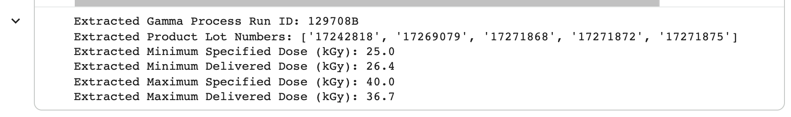
(opens the picture full size in a new tab)Click the picture to open it full size.
All 6 match what's printed on Page 4.
Why Do This? Now we can automatically detect key processing parameters instead of reading through text manually.
So far, we've extracted and cleaned the text, but we also need to identify where each word appears on the page. This is useful for:
We'll use pytesseract.image_to_data() to extract each word along with its position, confidence, and other OCR metadata. To find the cell, click a blank spot outside the cells, press Ctrl+F (Cmd+F on a Mac) and type STEP 12, then press Run on it:
# ============================================
# STEP 12: Extract Bounding Boxes for Each Word
# ============================================
#
# WHAT WE'RE DOING:
# Getting the location of every word Tesseract found.
#
# WHY THIS MATTERS:
# Knowing WHERE text appears is just as important as WHAT it says!
# This lets us:
# - Draw boxes around detected text
# - Find specific fields (like lot numbers in a certain area)
# - Verify OCR accuracy visually
#
# WHAT YOU'LL SEE:
# A sample of words with their position (x, y) and size (width, height).
# ============================================
# Get detailed OCR data including positions
ocr_data = pytesseract.image_to_data(gray, output_type=pytesseract.Output.DICT)Here's the rest of the same cell:
# Show the first 10 detected words and their locations
print("Sample of detected words with bounding boxes:")
print("-" * 60)
count = 0
for i in range(len(ocr_data["text"])):
word = ocr_data["text"][i].strip()
if word: # Only show non-empty words
x = ocr_data["left"][i]
y = ocr_data["top"][i]
w = ocr_data["width"][i]
h = ocr_data["height"][i]
conf = ocr_data["conf"][i]
print(f"Word: '{word}' Position: ({x}, {y}) Size: {w}x{h} Confidence: {conf}%")
count += 1
if count >= 10:
break
print(f"\n...and {len([t for t in ocr_data['text'] if t.strip()])} total words detected!")
# TIP: The confidence score (0-100) tells you how sure Tesseract is.
# Scores below 40 are often mistakes!What this code does:
ocr_data is a dictionary of lists. ocr_data["text"][i] is one word, and ocr_data["left"][i], ["top"][i], ["width"][i] and ["height"][i] are its box, in pixels of the picture.What you'll see in Colab:
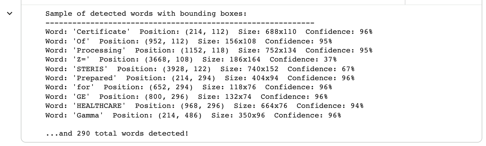
(opens the picture full size in a new tab)Click the picture to open it full size.
Tesseract found 290 words on Page 4. Look at 'Z=', with a confidence of 37%: that's the mark of the STERIS logo, read as if it were letters.
ocr_data now holds: every word Tesseract found, with its box and its confidence. STEP 13 to STEP 15 use it.
The reading also prints the first 5 rows of ocr_data, without skipping anything. Click the # STEP 12 cell, then click + Code. Paste this in and press Run:
# Extract bounding box data from OCR
ocr_data = pytesseract.image_to_data(gray, output_type=pytesseract.Output.DICT)
# Print first 5 extracted words with bounding boxes
for i in range(5):
print(f"Word: {ocr_data['text'][i]}, BBox: ({ocr_data['left'][i]}, {ocr_data['top'][i]}, {ocr_data['width'][i]}, {ocr_data['height'][i]})")pytesseract.image_to_data(gray, output_type=pytesseract.Output.DICT) returns a dictionary with text positions.What you'll see in Colab:
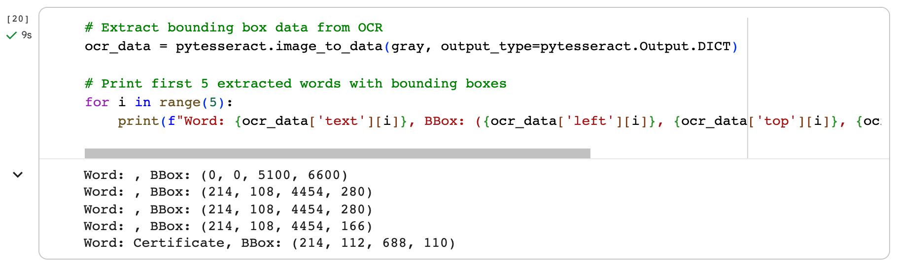
(opens the picture full size in a new tab)Click the picture to open it full size.
The first 4 rows have no word: they're the boxes around the whole page, a block of text, a paragraph and a line. That's why STEP 12 skips empty rows.
Why Do This? This tells us where each word appears in the image, which is useful for highlighting important text.
Now that we have the bounding box coordinates, we can draw boxes around detected words using OpenCV.
Press Run on the cell that starts with # STEP 13:
# ============================================
# STEP 13: Draw Bounding Boxes on ALL Detected Words
# ============================================
#
# WHAT WE'RE DOING:
# Drawing green rectangles around every word Tesseract found.
#
# WHY THIS MATTERS:
# This lets you visually verify what OCR detected.
# You can see if it missed any text or found extra "words" in noise.
#
# WHAT YOU'LL SEE:
# Your document with green boxes around every detected word!
# ============================================
# Make a copy of the grayscale image (we'll draw on this)
# Convert to color so we can draw colored boxes
img_with_boxes = cv2.cvtColor(gray.copy(), cv2.COLOR_GRAY2BGR)
# Set minimum confidence threshold (ignore low-confidence detections)
confidence_threshold = 40Here's the rest of the same cell:
# Loop through all detected words
for i in range(len(ocr_data["text"])):
word = ocr_data["text"][i].strip()
conf = int(ocr_data["conf"][i])
# Skip empty words or low-confidence detections
if not word or conf < confidence_threshold:
continue
# Get bounding box coordinates
x = ocr_data["left"][i]
y = ocr_data["top"][i]
w = ocr_data["width"][i]
h = ocr_data["height"][i]
# Draw a green rectangle
cv2.rectangle(img_with_boxes, (x, y), (x + w, y + h), (0, 255, 0), 2)
print("All detected words with bounding boxes (green):")
# Convert BGR to RGB for display
display(Image.fromarray(cv2.cvtColor(img_with_boxes, cv2.COLOR_BGR2RGB)))
# TIP: If you see boxes around noise/artifacts, increase confidence_threshold!What this code does:
continue skips to the next word, so empty rows and words Tesseract is less than 40% sure of get no box.cv2.rectangle(...) draws each box, as in Project 3. (0, 255, 0) is green, because OpenCV lists the colors as blue, green, red.What you'll see in Colab:
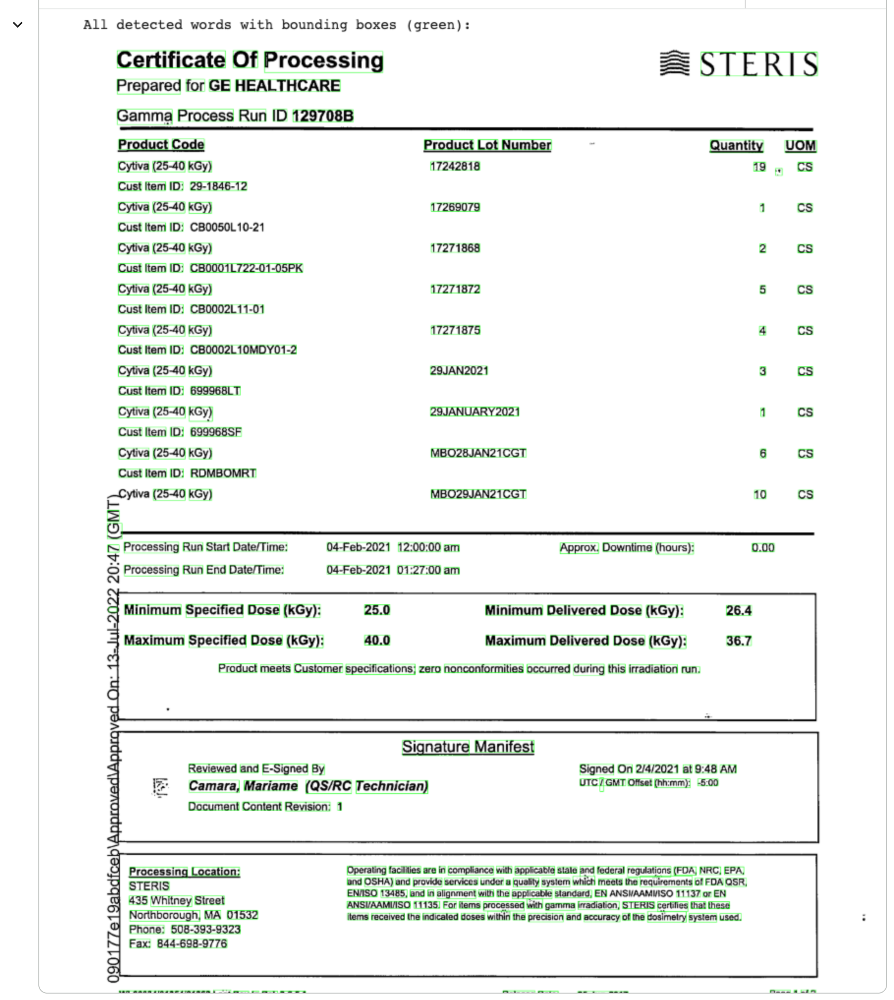
(opens the picture full size in a new tab)Click the picture to open it full size.
Why Do This?
Visualize Detected Words on the Image
The reading's version also writes each word above its box. Click the # STEP 13 cell, then click + Code. Paste this in and press Run:
import cv2
from PIL import Image
# Convert image to OpenCV BGR format
img_bgr = cv2.cvtColor(gray, cv2.COLOR_RGB2BGR)
# Get OpenCV image height for correct y-coordinate transformation
page_height = gray.shape[0]
# Define confidence threshold (ignore low-confidence words)
confidence_threshold = 40
# 📌 Step 9.1: Loop through Extracted OCR Words & Draw Bounding Boxes
for i in range(len(ocr_data["text"])):
word = ocr_data["text"][i].strip()
x, y, w, h = ocr_data["left"][i], ocr_data["top"][i], ocr_data["width"][i], ocr_data["height"][i]
conf = int(ocr_data["conf"][i]) # Convert confidence to int
# Ignore empty words & low-confidence OCR text
if not word or conf < confidence_threshold:
continue
# Draw bounding box
cv2.rectangle(img_bgr, (x, y), (x + w, y + h), (0, 255, 0), 2)
cv2.putText(img_bgr, word, (x, y - 5), cv2.FONT_HERSHEY_SIMPLEX, 0.5, (0, 255, 0), 2)
# 📌 Step 9.2: Convert Back to RGB & Display the Image
img_rgb = cv2.cvtColor(img_bgr, cv2.COLOR_BGR2RGB)
display(Image.fromarray(img_rgb))What this code does:
cv2.putText(...) writes the word in green, 5 pixels above its box.Here's what the document looks like with all detected words highlighted:
What you'll see in Colab:
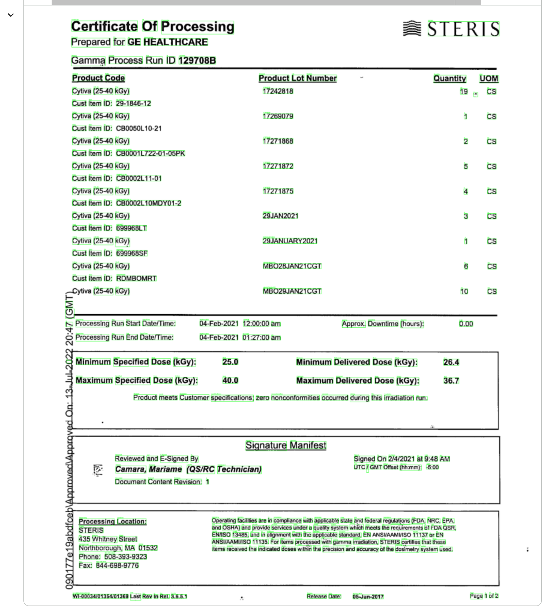
(opens the picture full size in a new tab)Click the picture to open it full size.
Now that we've successfully extracted and visualized the text, let's take it one step further. Instead of drawing bounding boxes for all detected words, we'll only highlight key fields that are important in pharmaceutical SDF documents.
But why?
We'll scan the OCR text, find key terms, and draw bounding boxes only around them.
Press Run on the cell that starts with # STEP 14:
# ============================================
# STEP 14: Highlight KEY Pharmaceutical Fields Only
# ============================================
#
# WHAT WE'RE DOING:
# Drawing RED boxes only around important pharmaceutical terms.
#
# WHY THIS MATTERS:
# In real pharmaceutical workflows, you only care about specific fields:
# - LOT numbers
# - CERTIFICATE information
# - VENDOR names
# - EXPIRATION dates
# - BATCH numbers
# This filters out all the "noise" to show just what matters!
#
# WHAT YOU'LL SEE:
# Only key pharmaceutical terms highlighted in red.
# ============================================Here's the rest of the same cell:
# Define the key fields we care about in pharmaceutical documents
key_fields = [
"CERTIFICATE",
"LOT",
"BATCH",
"VENDOR",
"EXPIRATION",
"DATE",
"COA",
"MANUFACTURER",
"STERIS", # Common pharmaceutical vendor
"PROCESSING",
"QUALITY"
]
# Create a fresh copy of the original image
img_key_fields = cv2.cvtColor(gray.copy(), cv2.COLOR_GRAY2BGR)
# Loop through detected words and highlight only key fields
highlighted_count = 0
for i in range(len(ocr_data["text"])):
word = ocr_data["text"][i].strip().upper() # Convert to uppercase for matching
# Check if this word is a key field
if word in key_fields:
x = ocr_data["left"][i]
y = ocr_data["top"][i]
w = ocr_data["width"][i]
h = ocr_data["height"][i]
# Draw a RED rectangle and label
cv2.rectangle(img_key_fields, (x, y), (x + w, y + h), (0, 0, 255), 2)
cv2.putText(img_key_fields, word, (x, y - 5),
cv2.FONT_HERSHEY_SIMPLEX, 0.5, (0, 0, 255), 2)
highlighted_count += 1
print(f"Found {highlighted_count} key pharmaceutical terms:")
display(Image.fromarray(cv2.cvtColor(img_key_fields, cv2.COLOR_BGR2RGB)))
# TIP: Add more terms to key_fields list if you want to highlight other words!What's Happening in the Code?
key_fields) that we want to highlight.What you'll see in Colab:
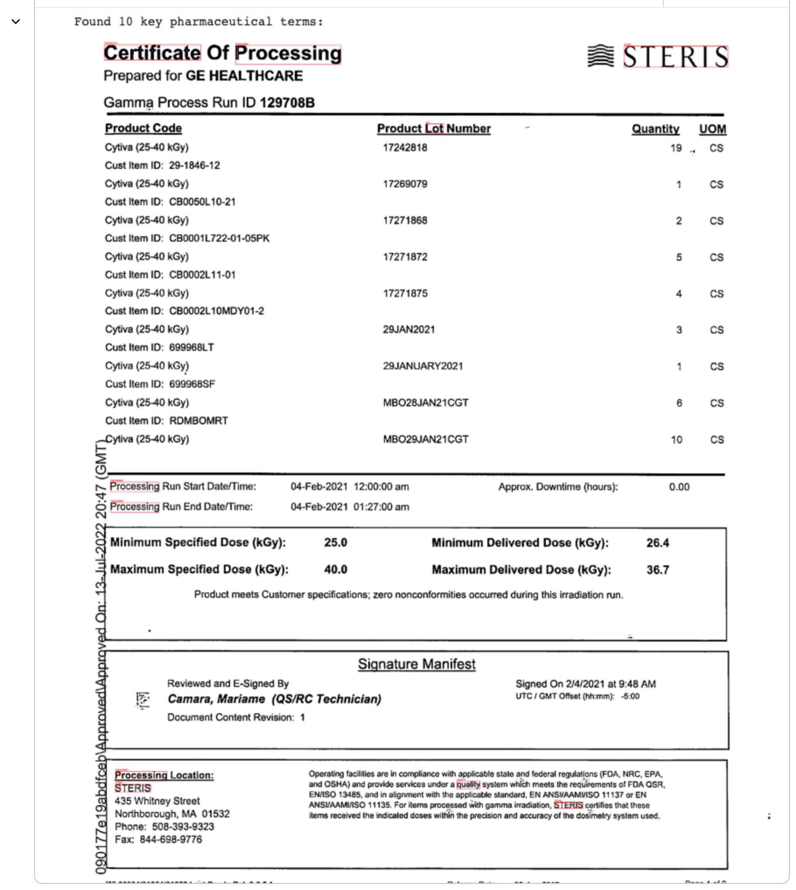
(opens the picture full size in a new tab)Click the picture to open it full size.
Expected Output: On Page 4, this highlights 10 words: each "CERTIFICATE", "LOT", "PROCESSING", "STERIS" and "QUALITY" that Tesseract read. Everything else will be ignored, making it easier to extract useful fields for AI models or automation.
Now that we've successfully highlighted key fields in our scanned document, we need to organize this extracted information in a structured format.
Most AI systems require structured data for further processing, classification, or training. To do this, we'll store our extracted key fields and their bounding box locations in JSON format.
Why Store the Data in JSON?
Press Run on the cell that starts with # STEP 15:
# ============================================
# STEP 15: Export Key Fields to JSON
# ============================================
#
# WHAT WE'RE DOING:
# Saving the key pharmaceutical fields in a structured JSON format.
#
# WHY THIS MATTERS:
# JSON is the standard format for passing data to:
# - AI models for training or inference
# - Databases for storage
# - Other software for further processing
# This makes your extracted data actually USEFUL!
#
# WHAT YOU'LL SEE:
# A nicely formatted JSON output with key fields and their locations.
# ============================================Here's the rest of the same cell:
import json
# Create a dictionary to store our extracted data
extracted_data = {}
# Loop through and collect key fields
for i in range(len(ocr_data["text"])):
word = ocr_data["text"][i].strip().upper()
if word in key_fields:
x = ocr_data["left"][i]
y = ocr_data["top"][i]
w = ocr_data["width"][i]
h = ocr_data["height"][i]
conf = ocr_data["conf"][i]
extracted_data[word] = {
"text": word,
"bounding_box": [x, y, w, h],
"confidence": conf
}
# Convert to pretty JSON
json_output = json.dumps(extracted_data, indent=4)
print("=" * 50)
print("EXTRACTED KEY FIELDS (JSON FORMAT)")
print("=" * 50)
print(json_output)
# TIP: You can save this to a file with:
# with open("extracted_fields.json", "w") as f:
# f.write(json_output)What this code does:
extracted_data[word] = {...} saves one entry for each key field: the word, its box and its confidence.json.dumps(extracted_data, indent=4) turns the dictionary into JSON text, each level indented by 4 spaces.What you'll see in Colab:
==================================================
EXTRACTED KEY FIELDS (JSON FORMAT)
=================================================={
"CERTIFICATE": {
"text": "CERTIFICATE",
"bounding_box": [
214,
112,
688,
110
],
"confidence": 96
},
"PROCESSING": {
"text": "PROCESSING",
"bounding_box": [
294,
5302,
368,
68
],
"confidence": 96
},
"STERIS": {
"text": "STERIS",
"bounding_box": [
3430,
5522,
202,
44
],
"confidence": 93
},
"LOT": {
"text": "LOT",
"bounding_box": [
2510,
678,
126,
64
],
"confidence": 96
},
"QUALITY": {
"text": "QUALITY",
"bounding_box": [
2734,
5372,
164,
56
],
"confidence": 96
}
}5 key fields, each with its box, [x, y, w, h], and its confidence. Why 5 entries for 10 red boxes? See Optional Reading at the bottom of this reading.
The reading's own list of key fields is a little different: it has SIGNATURE, but not STERIS, PROCESSING or QUALITY. Here is the code that we will write in Python. Click the # STEP 15 cell, then click + Code. Paste this in and press Run:
# Define key fields to highlight
key_fields = ["CERTIFICATE", "LOT", "BATCH", "VENDOR", "EXPIRATION", "DATE", "SIGNATURE", "COA", "MANUFACTURER"]
# Convert preprocessed grayscale image to BGR format (so we can draw colored boxes)
# Note: We use 'gray' because that's the image OCR was run on, so coordinates will match
img_bgr = cv2.cvtColor(gray, cv2.COLOR_GRAY2BGR)
# Loop through extracted OCR words
for i in range(len(ocr_data["text"])):
word = ocr_data["text"][i].strip().upper() # Convert to uppercase for better matching
x, y, w, h = ocr_data["left"][i], ocr_data["top"][i], ocr_data["width"][i], ocr_data["height"][i]
if word in key_fields: # Highlight only key fields found in the document
cv2.rectangle(img_bgr, (x, y), (x + w, y + h), (0, 0, 255), 2) # Red bounding box
cv2.putText(img_bgr, word, (x, y - 5), cv2.FONT_HERSHEY_SIMPLEX, 0.5, (0, 0, 255), 2)
# Convert back to RGB for display
img_rgb = cv2.cvtColor(img_bgr, cv2.COLOR_BGR2RGB)
display(Image.fromarray(img_rgb))key_fields now holds: the reading's list of 9 key fields. The next cell uses it.
What you'll see in Colab:
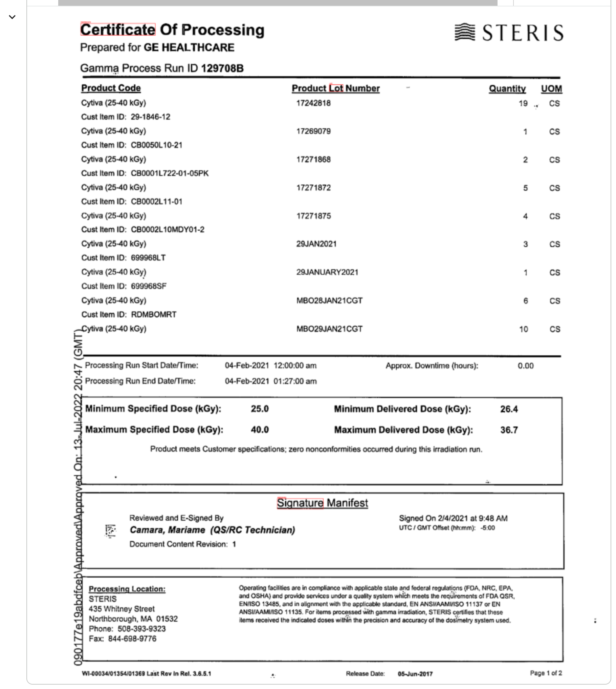
(opens the picture full size in a new tab)Click the picture to open it full size.
On Page 4, this list boxes CERTIFICATE, LOT and SIGNATURE.
Here is the code that we will write in Python. Click the cell you just added, then click + Code. Paste this in and press Run:
import json
# Initialize an empty dictionary to store extracted key field data
extracted_data = {}
# Loop through detected words to extract key fields
for i in range(len(ocr_data["text"])):
word = ocr_data["text"][i].strip().upper()
x, y, w, h = ocr_data["left"][i], ocr_data["top"][i], ocr_data["width"][i], ocr_data["height"][i]
if word in key_fields:
extracted_data[word] = {
"text": word,
"bounding_box": [x, y, w, h]
}
# Convert extracted data into JSON format
json_output = json.dumps(extracted_data, indent=4)
# Print structured JSON output
print(json_output)What you'll see in Colab:
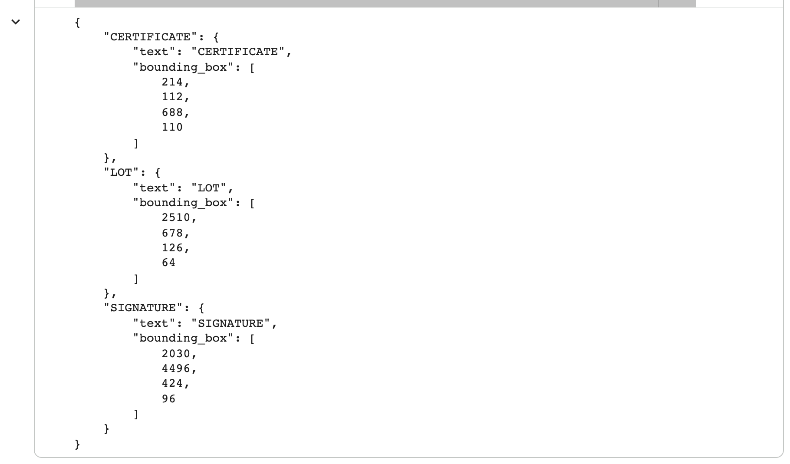
(opens the picture full size in a new tab)Click the picture to open it full size.
It saves the same boxes as STEP 15, without the confidence, for the 3 key fields this list found.
Some pharmaceutical SDFs (like the Dosimetry Record on Page 6) may be scanned at an angle or rotated 90 degrees. If you encounter a rotated document, you'll need to correct it before OCR will work properly.
Here's what a rotated document looks like (this is a different sample):
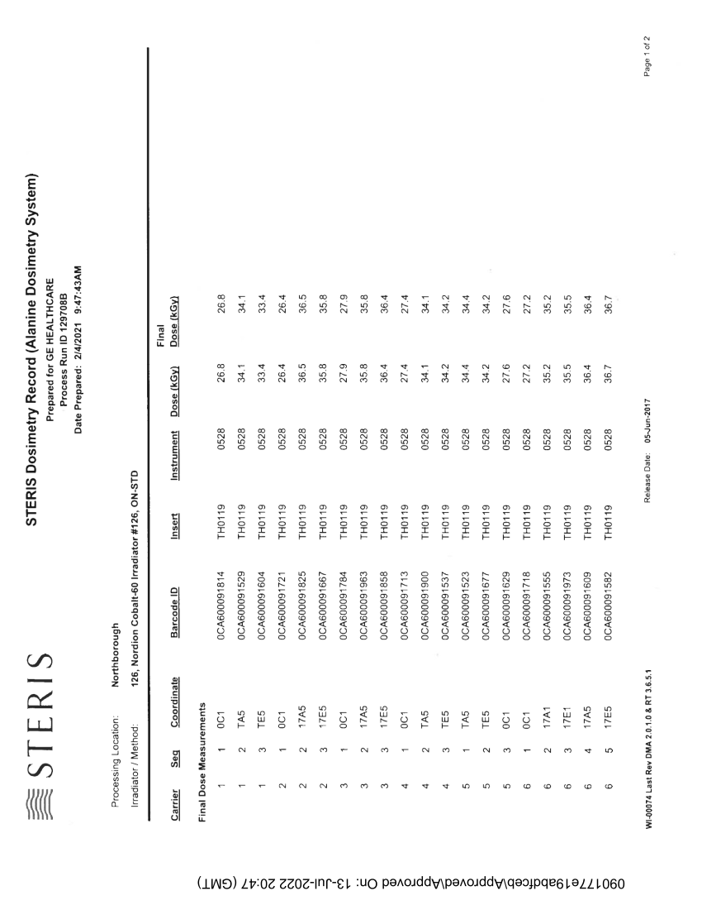
(opens the picture full size in a new tab)Page 6, the Dosimetry Record. Click the picture to open it full size.
Press Run on the cell that starts with # BONUS STEP, the last code cell in the notebook:
# ============================================
# BONUS STEP: Rotation Correction
# ============================================
#
# WHAT WE'RE DOING:
# Detecting and fixing rotated documents before OCR.
#
# WHY THIS MATTERS:
# OCR works best on upright text. Rotated documents will either:
# - Produce garbage output
# - Miss most of the text entirely
# Fixing rotation first dramatically improves accuracy!
#
# WHAT YOU'LL SEE:
# How to rotate an image 90, 180, or 270 degrees.
# ============================================Here's the rest of the same cell:
def rotate_image(image, angle):
"""
Rotate an image by a specific angle.
Args:
image: The input image (numpy array)
angle: Rotation angle (90, 180, or 270 degrees)
Returns:
Rotated image
"""
if angle == 90:
return cv2.rotate(image, cv2.ROTATE_90_CLOCKWISE)
elif angle == 180:
return cv2.rotate(image, cv2.ROTATE_180)
elif angle == 270:
return cv2.rotate(image, cv2.ROTATE_90_COUNTERCLOCKWISE)
else:
return image
# Example: Rotate an image 90 degrees clockwise
# Uncomment these lines if you have a rotated document:
# rotated_gray = rotate_image(gray, 90)
# display(Image.fromarray(rotated_gray))
print("Rotation function ready!")
print("\nTo use it on a rotated document:")
print(" rotated_gray = rotate_image(gray, 90) # Rotate 90 degrees")
print(" rotated_gray = rotate_image(gray, 180) # Rotate 180 degrees")
print(" rotated_gray = rotate_image(gray, 270) # Rotate 270 degrees")
# TIP: If you're not sure how much to rotate, try all three and see
# which one makes the text upright!What this code does:
def rotate_image(image, angle): makes a function, a set of steps with a name you can run again later.cv2.rotate(...) turns the picture a quarter turn, a half turn or three quarters. Any other angle gives the picture back unchanged.# rotated_gray are comments, so nothing is turned yet: Page 4 is already upright.What you'll see in Colab:
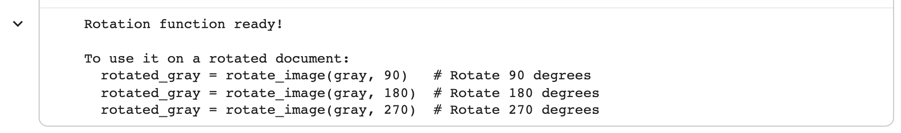
(opens the picture full size in a new tab)Click the picture to open it full size.
You can rotate an image using OpenCV. Click the # BONUS STEP cell, then click + Code. Paste this in and press Run:
# Rotate 90 degrees clockwise
rotated = cv2.rotate(gray, cv2.ROTATE_90_CLOCKWISE)
# Rotate 180 degrees
rotated = cv2.rotate(gray, cv2.ROTATE_180)
# Rotate 90 degrees counter-clockwise
rotated = cv2.rotate(gray, cv2.ROTATE_90_COUNTERCLOCKWISE)What you'll see in Colab:
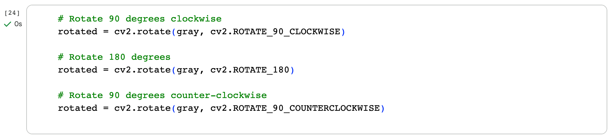
(opens the picture full size in a new tab)Click the picture to open it full size.
It prints nothing. Each line saves a turned copy of gray as rotated, and the next line replaces it. gray itself doesn't change.
Tip: If you're not sure how much to rotate, try all three options and see which one makes the text upright!